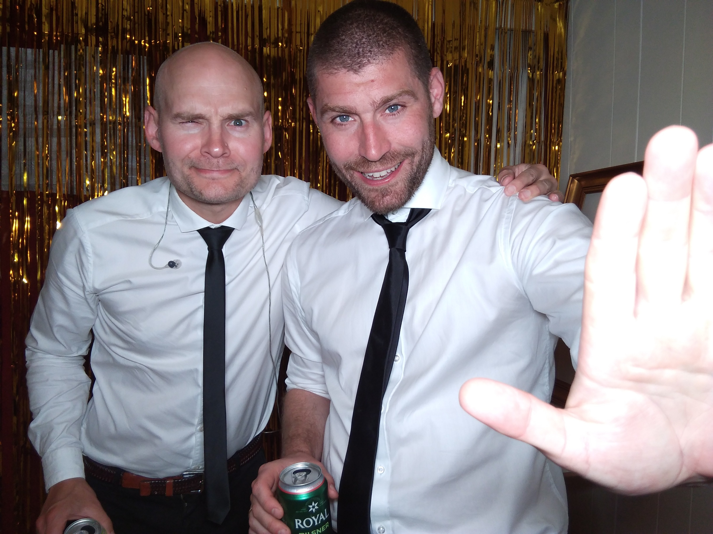
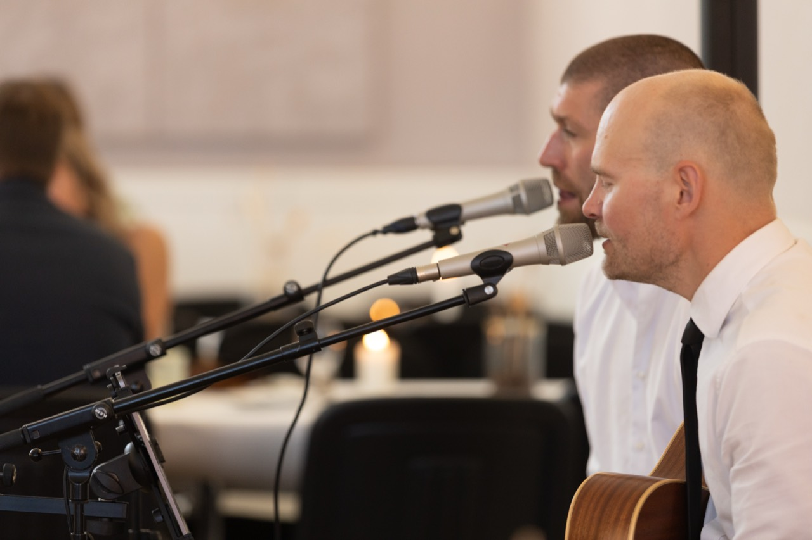

Bryllup
Vi kan spille til vielse, reception, middag og dans. Har I en særlig sang til vielsen eller den første dans, aftaler vi det på forhånd.
FLOW & GREEN · AKUSTISK DUO
Vi er en duo med to stemmer, guitar og cajon. Vi spiller moderne klassikere og evergreens til bryllupper, firmafester, fødselsdage og receptioner.
Hør os spilleVideoer og en optagelse fra øvelokalet
VIDEOER OG LYD
Her kan I høre nogle af vores fortolkninger og få en fornemmelse af vores lyd og stil. Vi spiller 100% live uden backtracks.
Vores repertoire består af over 300 sange, fra moderne pop og soul til klassikere. Vi modtager gerne musikønsker.
Se hele repertoiret (PDF) ↗KUNDEUDTALELSE
“Troels og Lasse gjorde det sindssygt godt både før, under og efter middagen”
— Morten Jørgensen, bryllup, 2019
Læs flere anmeldelser på Eventzonen ↗BRYLLUP, FIRMAFEST OG PRIVATE FESTER
Vi spiller både til reception og middag og til fest bagefter. Musik og lydniveau tilpasses arrangementet.
Vi kan spille til vielse, reception, middag og dans. Har I en særlig sang til vielsen eller den første dans, aftaler vi det på forhånd.
Livemusik til julefrokost, sommerfest og andre firmaarrangementer. Vi aftaler spilletider og praktiske forhold med jer inden festen.
Vi spiller nyere hits og gamle klassikere til fødselsdage og andre private fester. Der er plads til både at lytte, synge med og danse.
Akustisk musik til receptioner og jubilæer, med et lydniveau der giver plads til at tale sammen. Skriv også gerne, hvis I planlægger et andet arrangement.
MUSIK TIL BRYLLUP
Akustiske versioner til indgang, under ceremonien og udgang. Vi aftaler sangene med jer på forhånd.
Musik i baggrunden, så gæsterne både kan tale sammen og lytte til musikken.
Rolig musik mellem taler og indslag. Vi tilpasser lydniveau og pauser til programmet.
Klassikere og nyere hits til dans og fællessang. Vi hjælper også gerne med en version af jeres sang til den første dans.
Vælg den del af dagen, I har brug for musik til.
Vi kan kombinere vielse, reception, middag og dans. Kørsel inkluderes i vores tilbud.

MØD FLOW & GREEN
Vi er Troels og Lasse, og sammen er vi Flow & Green. Vi spiller med dobbelt vokal, guitar og cajon.
Repertoiret spænder fra moderne pop og soul til gamle klassikere. Vi spiller sangene i vores egne akustiske fortolkninger og tager gerne imod ønsker.
Vi medbringer professionelt lydudstyr og aftaler tidsplan, særlige sange og praktiske detaljer med jer i god tid.
Kontakt os ↗FRA FORESPØRGSEL TIL AFTALE
Send dato, sted og et par ord om jeres ønsker.
Vi svarer typisk inden for 24 timer med et uforpligtende tilbud.
Når I har valgt at booke os, aftaler vi tidsplan, musikønsker og praktiske forhold. Vi kommer i god tid og sætter op.
SPØRGSMÅL OG SVAR
Vi lærer gerne en eller flere sange, hvis det passer ind i aftalen, og vi får besked i god tid. Vi kan også tale om tempo og længde til jeres første dans.
Det aftaler vi ud fra jeres dag. Vi spiller i det aftalte tidsrum med korte pauser, der ofte kan placeres ved taler og indslag.
Ja, vi medbringer det nødvendige lydudstyr til almindelige bryllupper og fester. Ved meget store lokaler eller udendørs arrangementer afklarer vi behovet sammen.
Ja, når vejret og forholdene tillader det, og der er strøm i nærheden. Vi aftaler en plan, hvis vejret driller.
Ja, vi spiller også til fødselsdage, firmafester, sommerfester og andre arrangementer.
UFORPLIGTENDE FORESPØRGSEL
Fortæl os om dato, sted og ønsker. I behøver ikke kende alle detaljer endnu.
Vi vender typisk tilbage inden for 24 timer med et uforpligtende tilbud.
flowandgreen@gmail.com ↗I kan også kontakte os her: